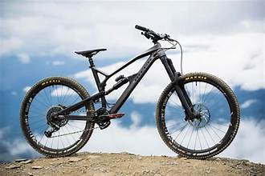
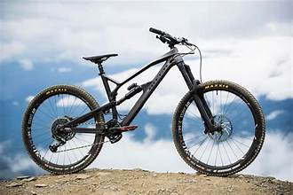

La Commission Sportive tient à proposer à ses étudiants une pratique sportive régulière.
Dès lors, nous vous proposons un programme sportif très complet. Ces activités ont lieu chaque semaine à partir du 3 octobre (la semaine prochaine) sauf durant les jours fériés et les congés scolaires.
Elles sont Réservées à la communauté Condorcet et sont gratuites !
Quelle que soit votre section ou votre année d'étude, toutes ces activités vous sont destinées.
C'est comme ça que chaque semaine, vous pouvez participer à des ateliers aussi variés que du crossfit, du football, du Basket ball, de la danse, du hand ball, de la course à pied, de la musculation, du volley ball et bien plus encore...
Retrouvez ci-joints les programmes sportifs de chaque implantation.
Comment y participer ?
Simplement en vous inscrivant à une ou plusieurs de ces activités sur l'application Novasport.
Vous pouvez suivre toute l'actualité sportive sur la page facebook/condorcetsports et depuis peu la page instagram/condorcet_sports
2019, départ du tour de France de Bruxelles ?
En 2019 le Tour de France a démarré de Bruxelles afin de célébrer le 50e anniversaire de la première victoire d’Eddy Merckx sur les routes de la Grande Boucle.
Toutefois, un conflit a opposé à l’époque le « Cannibale » à la société organisatrice de l’épreuve (ASO),à l’époque.
Voici ce que nous disait Eddy en 2019.
"En principe, je ne serai pas au départ du Tour de France en 2019 ! J’ai eu un différend avec la direction générale d’ASO. Les contacts sont coupés.
Il y a eu tellement peu de respect pour moi, ça a été trop loin. La situation peut changer mais, pour le moment, c’est non.
Je leur ai écrit, ils ne m’ont pas encore répondu. Je ne compte, pour ma part, pas rouvrir le dialogue. Si je suis mort, je n’y serais pas non plus. Personne n’est indispensable dans la vie", a précisé Eddy Merckx au micro de notre collègue RTBF David Bertrand.
Et d’ajouter des détails à son explication : "C’est un manque de respect d’ASO, ce n’est pas un conflit d’argent.
C’est aussi lié au fait qu’ils nous rendent responsables de l’annulation du Tour d’Oman et du Tour du Qatar. C’est de notre faute s’il n’y a plus ces deux courses ? Je pense que non.
Avec la crise pétrolière et tout ce qui s’est passé au Qatar, ce n’est pas uniquement le cyclisme qui a été pénalisé mais d’autres disciplines aussi. Beaucoup de gens ont changé. Je pense que c’est lié au fait que les championnats du monde ont coûté tellement d’argent.
Nous n’étions pas organisateurs des championnats du monde.
L’organisation du Tour du Qatar et d’Oman, c’était une très belle aventure, aussi bien pour ASO que pour nous-mêmes."
En principe, je ne serai pas au départ du Tour de France en 2019 ! J’ai eu un différend avec la direction générale d’ASO. Les contacts sont coupés.
Il y a eu tellement peu de respect pour moi, ça a été trop loin. La situation peut changer mais, pour le moment, c’est non.
Je leur ai écrit, ils ne m’ont pas encore répondu. Je ne compte, pour ma part, pas rouvrir le dialogue. Si je suis mort, je n’y serais pas non plus. Personne n’est indispensable dans la vie", a précisé Eddy Merckx au micro de notre collègue RTBF David Bertrand.
Et d’ajouter des détails à son explication : "C’est un manque de respect d’ASO, ce n’est pas un conflit d’argent.
C’est aussi lié au fait qu’ils nous rendent responsables de l’annulation du Tour d’Oman et du Tour du Qatar. C’est de notre faute s’il n’y a plus ces deux courses ? Je pense que non.
Avec la crise pétrolière et tout ce qui s’est passé au Qatar, ce n’est pas uniquement le cyclisme qui a été pénalisé mais d’autres disciplines aussi. Beaucoup de gens ont changé. Je pense que c’est lié au fait que les championnats du monde ont coûté tellement d’argent.
Nous n’étions pas organisateurs des championnats du monde.
L’organisation du Tour du Qatar et d’Oman, c’était une très belle aventure, aussi bien pour ASO que pour nous-mêmes."
« Les diables rouges » !!!
L'équipe de Belgique de football est la sélection de joueurs belges représentant le pays lors des compétitions internationales de football masculin, sous l'égide de la Royal Belgian Football Association (RBFA).
Les internationaux belges sont surnommés les « Diables Rouges » (en néerlandais Rode Duivels) en référence à la couleur de leur maillot, depuis 19062, bien que ce surnom ne soit devenu officiel que plus tard. Durant le mandat de Raymond Goethals, dans les années 1970, ils sont aussi appelés les « Diables Blancs »2,3,4 ou encore les « Diables Noirs » au début des années 20002, après l'introduction du maillot extérieur entièrement noir.
Le premier match officiel de la Belgique est organisé le 1er mai 1904 à Bruxelles contre la France et se solde par un partage (3-3). La sélection belge remporte en 1920 la médaille d'or aux Jeux olympiques. La Belgique a depuis participé à treize phases finales de la Coupe du monde. Son meilleur résultat est la troisième place atteinte lors de la Coupe du monde 2018 en Russie. En Championnat d'Europe, son meilleur résultat est une finale en 1980, perdue contre l'Allemagne de l'Ouest.
Les résultats des Diables Rouges lors des qualifications à l'Euro 2016 leur permettent de devenir la huitième nation à accéder à la première place du classement mondial de la FIFA en novembre 20155, tout en étant classée cinquième en Europe au ranking UEFA6. Éliminée en quarts de finale de l'Euro 2016, elle redescend à la cinquième place mais un excellent parcours lors de la Coupe du monde 2018 lui permet de réintégrer la pole position. D'octobre 2018 à mars 2022, l'équipe de Belgique maintient sa première place au classement mondial de la FIFA avant de la perdre au profit du Brésil et, éliminée dès la phase de groupe de la Coupe du monde au Qatar, chute ensuite à la quatrième place.
Pourquoi faire un stage de sport ?
La motivation à poursuivre un stage sportif varie d’un cas à l’autre. Pour certains, il pourrait s’agir d’une exigence académique ou athlétique, sans perdre de vue le fait que ces formations pourront vous être d’une grande aide pour débuter votre carrière sportive.
Les raisons pour lesquelles un stage est bénéfique pour votre carrière dans le sport sont nombreuses. On compte trois avantages principaux : les possibilités d’apprentissage, la mise en réseau et l’avantage concurrentiel.
Galerie d'images"responsive"
Image Title
Image Title
Image Title
Image Title
Image Title
Image Title
Image Title
Image Title
Image Title
Opportunités de perfectionnement
L'objectif principal d'un stage, que ce soit dans le domaine sportif ou autre est que vous puissiez vous familiariser avec les divers aspects fondamentaux en grande relation avec vos aspirations professionnelles. Apprentissage, découverte et expérience sont les mots d’ordre d’un stage sportif.
Pour ceux qui souhaitent entamer des stages en tant qu’athlètes sportifs, le suivi de ce type d'apprentissage est une option idéale pour se perfectionner et progresser dans son sport. Pour le tennis à titre d’exemple, étant un sport individuel, un perfectionnement de ses capacités est plus que primordial pour pouvoir tenir face à son adversaire. Lors d’un stage, les apprenants seront en mesure d’être initiés sur les meilleures gestes techniques à adopter, le contrôle les déplacements, la manipulation de la raquette, en plus d’autres astuces très utiles à la productivité d’un tennisman. Le suivi d’un stage sportif pour jeux collectifs (football, basketball, baseball, etc …) est un excellent moyen d’alimenter le travail d’équipe, d’avoir une plus grande approche sociale, améliorer ses compétences physiques et de commencer à découvrir peut-être vos futurs coéquipiers.
Le stage de sport est de ce fait, une excellente option pour vous d’avoir une première approche « sur terrain » avec votre futur métier. Si vous suivez déjà des cours théoriques dans un domaine précis, la réalisation d’un stage pourra vous aider à mettre en exergue vos savoirs et à vous perfectionner pour devenir meilleur.
Pour un jeune enfant, participer à un stage sportif pourra améliorer ses compétences cognitives et attiser sa curiosité. Ce type d’apprentissage est également un excellent moyen d’inciter les petits dès leur plus jeune âge à se mettre au sport pour jouir de ses nombreux bienfaits. Envie de découvrir des exercices sportifs, consultez le site Sportweek.
La mise en réseau grâce au stage sportif
Certains professionnels de l’industrie du sport affirment que les meilleurs avantages d’un stage sportif sont les réseaux que vous allez créer suite à votre expérience. Les organisateurs de stage aiment engager des personnes connues et très prisées dans le sport à partager. Un stage est par conséquent le moyen idéal pour vous faire mieux connaître et aspirer à créer un réseau avec un recruteur potentiel. Pendant votre séjour en stage sportif, vous aurez probablement la chance de rencontrer des employés d’autres entreprises liées au sport. Ces contacts s'avéreront inestimables, non seulement comme point de départ de votre carrière, mais également comme des entrées utiles à exploiter tout au long de votre profession.
Avantage compétitif
Enfin, un stage de sport vous donnera un avantage sur vos concurrents. Pour les personnes qui désirent percer dans un travail sportif autre qu’en étant athlète, avec autant de jeunes professionnels qui tentent de se lancer dans l'industrie, un stage de qualité sur votre CV vous donnera un coup de pouce instantané. Cependant, il est important de garder à l'esprit que d'innombrables autres personnes auront également une expérience de stage. Pour vous différencier, impressionnez votre employeur en construisant des références solides pour votre CV.
En ce qui concerne les futurs athlètes qui sont encore novices mais passionnés, grâce aux stages, vous seriez en mesure d’avoir un grand plus face aux autres sportifs qui n’en ont pas connu. De plus, les astuces, conseils et recommandations proposés lors des stages sportifs sont de réelles opportunités de se différencier et de progresser tout au long de sa carrière.
Les bienfaits du sport
Les bienfaits d’une activité physique sur la santé sont reconnus. La pratique d’une activité physique et sportive régulière contribue à améliorer l’état de forme général à tous âges
Les bénéfices sur la santé
L’activité physique est fortement recommandée pour prévenir des pathologies chroniques et contribuer au traitement d’un très grand nombre d’affections de longue durée comme le cancer, le diabète ou l’obésité mais également les maladies neurodégénératives et psychiatriques.
Le plaisir du sport
Lorsqu’on pratique une activité sportive, le corps sécrète des hormones telles que l’endorphine, la dopamine ou l’adrénaline qui permettent de réduire le stress, améliorer la qualité du sommeil, diminuer les douleurs et agir comme un antidépresseur, c’est donc avant tout une source de plaisir.
Le lien social
Le sport est un formidable créateur de ciment social, de passion et de citoyenneté. Pour les plus jeunes, les associations sportives sont un lieu privilégié pour rencontrer de nouvelles personnes, bien grandir et s’épanouir, dans le respect des autres. Et ça permet de gagner en confiance et en autonomie.
Je signale à mon médecin toute douleur dans la poitrine ou tout essoufflement anormal survenant à l’effort.
Je signale à mon médecin toute palpitation cardiaque survenant à l’effort ou juste après l’effort.
Je signale à mon médecin tout malaise survenant à l’effort ou juste après l’effort.* Télécharger la vidéo
Je respecte toujours un échauffement et une récupération de 10 mn lors de mes activités sportives.
Je bois 3 ou 4 gorgées d’eau toutes les 30 min d’exercice à l’entraînement comme en compétition.
J’évite les activités intenses par des températures extérieures en-dessous de -5°C ou au-dessus de +30°C et lors des pics de pollution.
Je ne fume pas, en tout cas jamais dans les 2 heures qui précédent ou qui suivent la pratique d’une activité sportive.
Je ne consomme jamais de substance dopante et j’évite l’automédication en général.
Je ne fais pas de sport intense si j’ai de la fièvre, ni dans les 8 jours qui suivent un épisode grippal (fièvre - courbatures).
Je pratique un bilan médical avant de reprendre une activité sportive si j’ai plus de 35 ans pour les hommes et de 45 ans pour les femmes.
Ces 10 réflexes en or s’appuient sur les 10 règles d’or édictées par le Club des Cardiologues du sport. Elles reposent sur trois principes :
Faire attention à sa santé.
Respecter certaines consignes simples et de bon sens lorsqu’on fait du sport.
Surveiller les signaux anormaux et ne pas hésiter à aller consulter son médecin traitant.
Les accidents cardiaques survenant lors de la pratique sportive ne sont pas rares. Ils constituent la majeure partie des accidents sportifs graves, responsables de 1200 à 1500 cas par an de mort subite (non traumatique) sur notre territoire. L’enjeu de cette campagne est de prévenir les comportements dangereux ou simplement négligents qui augmentent ces risques et que les sportifs doivent apprendre à ne pas reproduire


 
